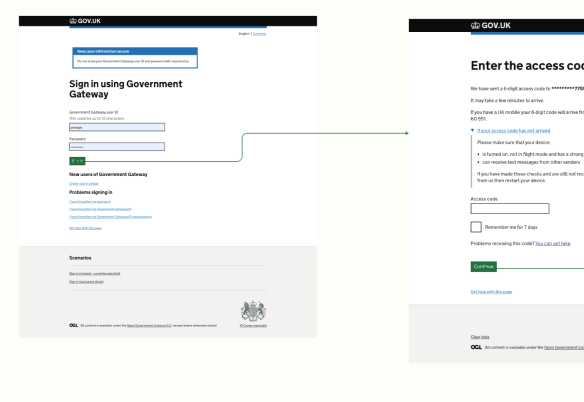

HM Revenue & Customs
Designing trust and confidence inside Government Gateway.
Leading interaction design for a security-focused service within Government Gateway, balancing operational risk, technical constraints and the needs of internal teams.
Read case study →